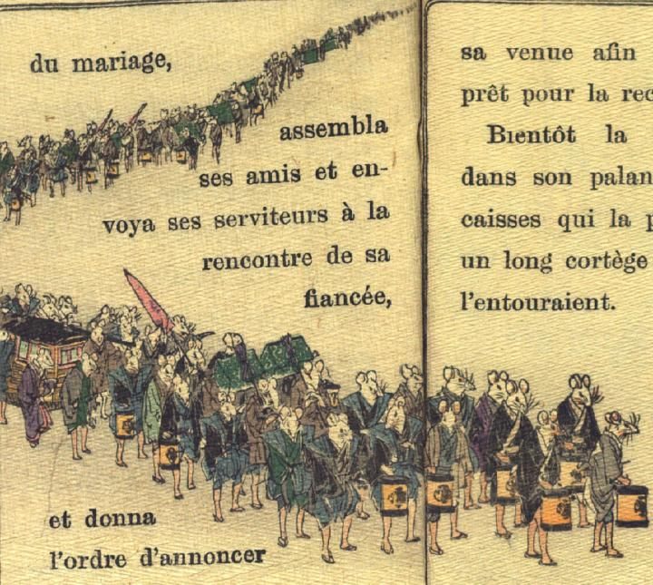

鼠の花嫁行列。羽織に着物姿の鼠や裃姿の鼠が、いずれも裾を端折り、銘々に提灯、挟箱、飾り槍を手にしている。腕脚はいずれも人間のものである。提灯には小槌の紋章が入っている。行列の先頭から少し下がった辺りに駕籠があり、その手前を紫色の着物を身に着け、裾を持ち上げて歩く女の鼠の姿が見える。
著作者：J.Dautremer／出典：親書誌：U426_nichibunken_0111：Le mariage de la souris／日付：2006／資源識別子：U426_nichibunken_0111_0007_0000
Copyright (c)2010- International Research Center for Japanese Studies, Kyoto, Japan. All rights reserved.